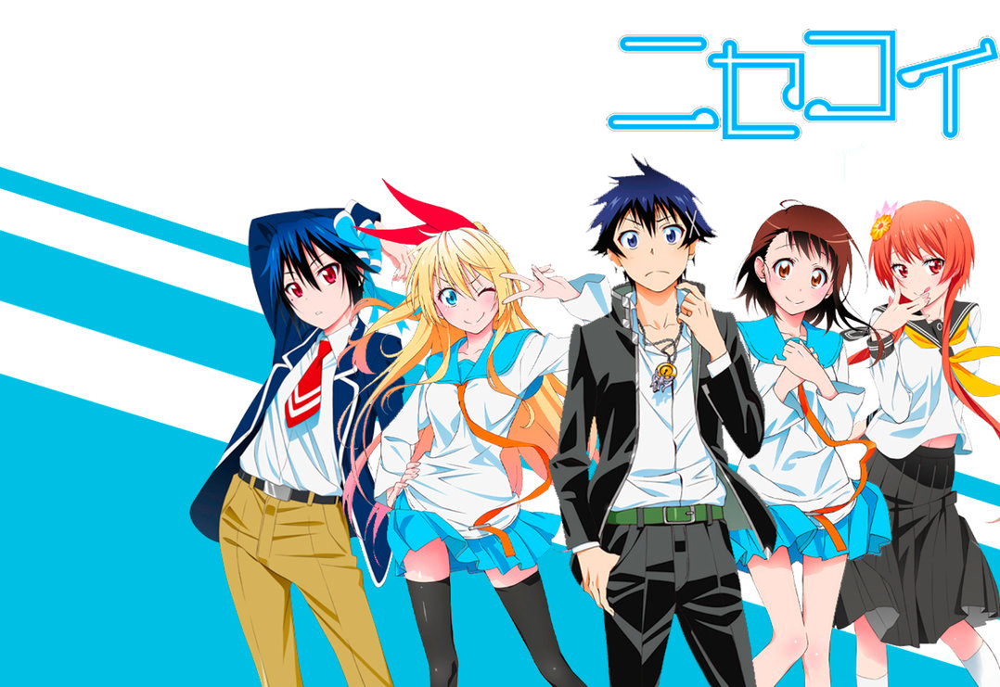

_wasting my time for the worth
Where I build my daily mood towards a colorful life.
Not so cool daily life but this is what I am doin' and I work well with colors than sketches.
From my lifetime experience, here are the benefits of coloring from me to you:
Everyone said "Life". Anime is Life? Why? They said,"Anime is my life, its my inspiration, its everything worth of life for and it helps me to escape the reality that has for me.
I learned about life lesson in every main characters. Even though it is not even close to the real world but it highlight our emotion deeply.
"Know a secret, I can speak Mandarin fluently and write fairly. LMAO"
All of my siblings(6) include me , exclude our youngest brother(Age 3), we have been learning chinese language since kindergarten to primary school.
In order for not forgetting the chinese words and its pronunciation,I will watch chinese drama from time to time whenever I have the long break time. That ways it can :
One of my favourite is Mobile Legend: Bang Bang(MLBB). They said,"We don't create mobile phone, but we create mobile game". I really love that sentence.
Playing this game have really gave me more pros than cons.
Yeah, of course it have its own cons but as long as you can still handle your daily life efficiently.That's okay.
What do you gain?
To ensure all of my interest activities: I prepared my Timetable